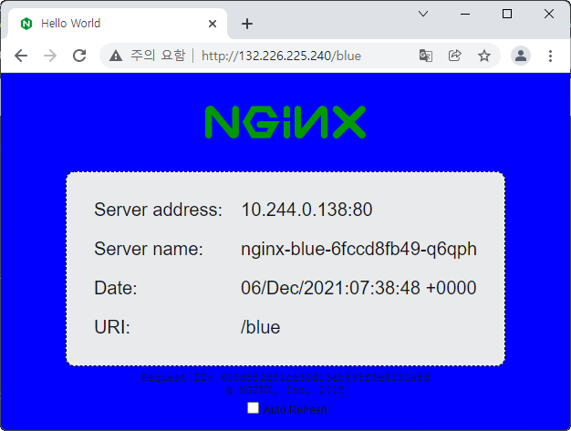
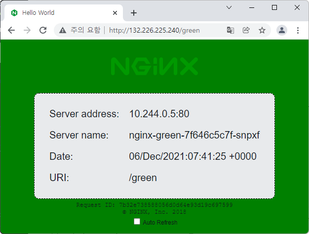
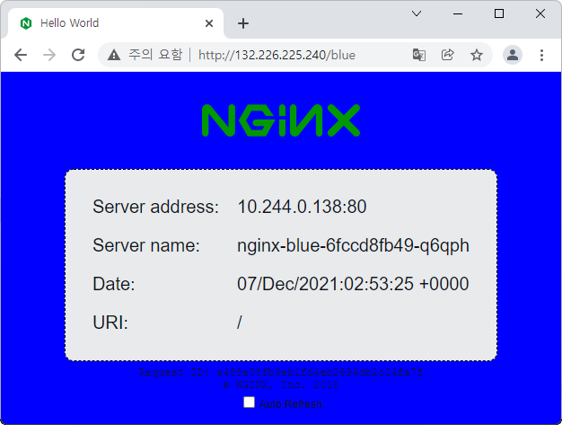

4.1.1 NGINX Ingress Controller 사용하기
OKE에서 Kubernetes에서 사용가능한 여러가지 오픈 소스 ingress controller를 사용할 수 있습니다. 본 문서에서는 그중에서 가장 많이 사용되며, OKE 문서에서 예제로 설명하고 있는 nginx-ingress-controller를 테스트 해보겠습니다.
-
공식 문서
-
설치 버전
- OKE 문서는 v0.44.0 기준이 NGINX Ingress Controller for Kubernetes 문서는 최신 버전인 v1.1.0 기준입니다. 본 문서는 최신 버전인 v1.1.0 기준이며, 해당 버전은 Kubernetes 1.22, 1.21, 1.20, 1.19을 지원하고 있습니다.
- NGINX Ingress Controller의 지원 버전
NGINX Ingress Controller 설치
Ingress Controller 설치
-
kubectl 사용이 가능한 Cloud Shell 또는 작업환경에 접속합니다.
-
다음 명령으로 NGINX Cloud Deployment 설치
kubectl apply -f https://raw.githubusercontent.com/kubernetes/ingress-nginx/controller-v1.1.0/deploy/static/provider/cloud/deploy.yaml -
설치 확인
ingress-nginx namespace에 아래와 같이 설치된 것을 확인할 수 있습니다.
oke_admin@cloudshell:~ (ap-seoul-1)$ kubectl get all -n ingress-nginx NAME READY STATUS RESTARTS AGE pod/ingress-nginx-admission-create-x74zf 0/1 Completed 0 65s pod/ingress-nginx-admission-patch-f8x5k 0/1 Completed 0 65s pod/ingress-nginx-controller-69db7f75b4-vb84p 1/1 Running 0 65s NAME TYPE CLUSTER-IP EXTERNAL-IP PORT(S) AGE service/ingress-nginx-controller LoadBalancer 10.96.212.64 132.226.225.240 80:31975/TCP,443:31756/TCP 65s service/ingress-nginx-controller-admission ClusterIP 10.96.95.133 <none> 443/TCP 65s NAME READY UP-TO-DATE AVAILABLE AGE deployment.apps/ingress-nginx-controller 1/1 1 1 65s NAME DESIRED CURRENT READY AGE replicaset.apps/ingress-nginx-controller-69db7f75b4 1 1 1 65s NAME COMPLETIONS DURATION AGE job.batch/ingress-nginx-admission-create 1/1 2s 65s job.batch/ingress-nginx-admission-patch 1/1 2s 65s
Load Balancer IP 확인
-
Ingress Controller 서비스의 로드밸런서 IP인 EXTERNAL-IP를 확인합니다.
oke_admin@cloudshell:~ (ap-seoul-1)$ kubectl get svc -n ingress-nginx NAME TYPE CLUSTER-IP EXTERNAL-IP PORT(S) AGE ingress-nginx-controller LoadBalancer 10.96.212.64 132.226.225.240 80:31975/TCP,443:31756/TCP 5m31s
PATH 기반 기본 라우팅 테스트
가장 기본적인 라우팅으로 URL PATH에 따라 라우팅 서비스를 달리하는 경우입니다.
-
테스트를 위한 샘플 앱을 배포합니다.
배경 색깔이 다른 두개의 웹페이지를 배포합니다.
kubectl create deployment nginx-blue --image=thekoguryo/nginx-hello:blue kubectl expose deployment nginx-blue --name nginx-blue-svc --port 80 kubectl create deployment nginx-green --image=thekoguryo/nginx-hello:green kubectl expose deployment nginx-green --name nginx-green-svc --port 80 -
ingress 설정 YAML(
path-basic.yaml)을 작성합니다.- /blue 요청은 nginx-blue-svc 로 라우팅
- /green 요청은 nginx-green-svc로 라우팅
apiVersion: networking.k8s.io/v1 kind: Ingress metadata: name: ingress-path-basic annotations: kubernetes.io/ingress.class: nginx spec: rules: - http: paths: - path: /blue pathType: Prefix backend: service: name: nginx-blue-svc port: number: 80 - http: paths: - path: /green pathType: Prefix backend: service: name: nginx-green-svc port: number: 80 -
작성한
path-basic.yaml을 배포합니다.oke_admin@cloudshell:~ (ap-seoul-1)$ kubectl apply -f path-basic.yaml ingress.networking.k8s.io/ingress-path-basic created oke_admin@cloudshell:~ (ap-seoul-1)$ kubectl get ingress NAME CLASS HOSTS ADDRESS PORTS AGE ingress-path-basic <none> * 132.226.225.240 80 49s -
앞서 확인한 ingress controller의 EXTERNAL IP로 접속하여 결과를 확인합니다.
-
/blue 요청

-
/green 요청

-
POD 정보 확인
정의한 PATH에 따라 각각 blue, green 앱이 배포된 POD로 라우팅 된 것을 웹페이지 배경색 및 POD IP로 알 수 있습니다.
oke_admin@cloudshell:~ (ap-seoul-1)$ kubectl get pod -o wide NAME READY STATUS RESTARTS AGE IP NODE NOMINATED NODE READINESS GATES nginx-blue-6fccd8fb49-q6qph 1/1 Running 0 13m 10.244.0.138 10.0.10.139 <none> <none> nginx-green-7f646c5c7f-snpxf 1/1 Running 0 13m 10.244.0.5 10.0.10.84 <none> <none>
-
Rewrite Target
URL PATH 라우팅 결과를 보면 /blue, /green의 Path가 최종 라우팅 되어 실행되는 앱으로 그대로 전달되는 것을 알 수 있습니다. ingress controller에서 라우팅을 위해서만 사용하고, 실제 앱의 동작을 위해는 수정이 필요한 경우에 사용합니다.
-
ingress 설정 YAML(
path-rewrite-target.yaml)을 작성합니다.- path: /blue -> /blue(/|$)(.*) 로 변경
- annotation 추가: nginx.ingress.kubernetes.io/rewrite-target: /$2
- 예시
- ~~/blue -> ~~/ 로 앱으로 전달
- ~~/blue/abc -> ~~/abc 로 앱으로 전달
apiVersion: networking.k8s.io/v1 kind: Ingress metadata: name: ingress-path-rewrite-target annotations: kubernetes.io/ingress.class: nginx nginx.ingress.kubernetes.io/rewrite-target: /$2 spec: rules: - http: paths: - path: /blue(/|$)(.*) pathType: Prefix backend: service: name: nginx-blue-svc port: number: 80 - http: paths: - path: /green(/|$)(.*) pathType: Prefix backend: service: name: nginx-green-svc port: number: 80 -
앞선
path-basic.yaml를 삭제하고path-rewrite-target.yaml를 배포합니다.oke_admin@cloudshell:~ (ap-seoul-1)$ kubectl delete -f path-basic.yaml ingress.networking.k8s.io "ingress-path-basic" deleted oke_admin@cloudshell:~ (ap-seoul-1)$ kubectl apply -f path-rewrite-target.yaml ingress.networking.k8s.io/ingress-path-rewrite-target created oke_admin@cloudshell:~ (ap-seoul-1)$ kubectl get ingress NAME CLASS HOSTS ADDRESS PORTS AGE ingress-path-rewrite-target <none> * 132.226.225.240 80 43s -
앞서 확인한 ingress controller의 EXTERNAL IP로 접속하여 결과를 확인합니다.
-
~~/blue 요청
- 라우팅된 앱에서는 /blue가 빠지고 /로만 수신됨

-
~~/blue/abc 요청
- 라우팅된 앱에서는 /blue가 빠지고 /abc로만 수신됨
-
** 이 글은 개인으로서, 개인의 시간을 할애하여 작성된 글입니다. 글의 내용에 오류가 있을 수 있으며, 글 속의 의견은 개인적인 의견입니다. **